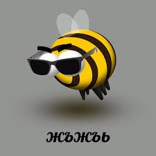
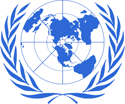

Основной целью Общеста АУЕ-ПЧЕЛ(ОАП) является распространение понятия "АУЕ-ПЧЕЛА" и поиск людей,которые готовы поддержать нас. Многие люди шарахаются,когда слышут фразу на улице "Я—АУЕ-ПЧЕЛА!". Правительства многих стран поддерживают нас в данном деле. Нас поддерживает:Таджикистан,Азербайджан,Россия(Расея вперет!1!!),USA(пендосы) и т.д. Многие могут подумать,что мы боимся пасечников... НО НЕТ,ОНИ НАШИ ВРАГИ И МЫ УНИЧТОЖИМ ИХ ДАЖЕ ЕСЛИ БУДЕМ ЖЕРТВОВАТЬ СОБОЙ!АЕЕЕ....
Наша организация была образована в 1987г. при поддержке ООН и уже включает в себя более 25000000+ человек по всему земному шару. Мы можем сказать только то,что это не предел. К завершению нашего плана мы скажем пасечникам: "ЛЕЖАТЬ+СОСАТЬ!" Т.о. мы надеемся,что сможим достичь наших целей в скором времени.
В наших секретных лабораториях в рамках проекта «Пандора» разрабатывалось психотропное оружие на основе меда с добавлением свинца. В результате неудачного эксперимента 24.02.2008 большинство ученых, работавших над прибором, подверглись воздействию психотропного излучения, и они, находясь в состоянии аффекта, растащили прототип по деталям. Возможно, наши ученые до сих пор находятся в состоянии аффекта.
Звонок бесплатный для всех желающий кроме пасечников.
Для пасечников цена попытки подключиться на линию стоит 10$,а минута разговора стоит 0$,т.к. мы не ведем разговор с этими блядями.